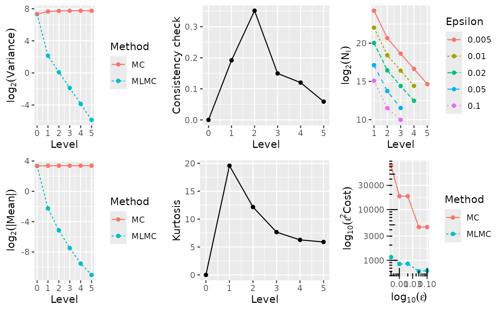
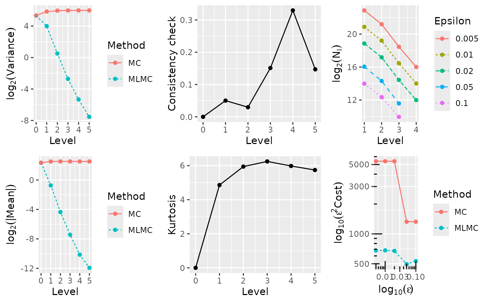
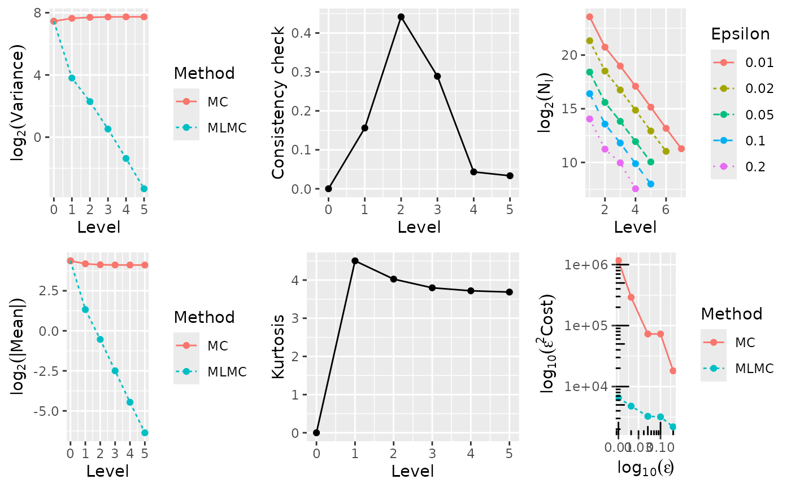
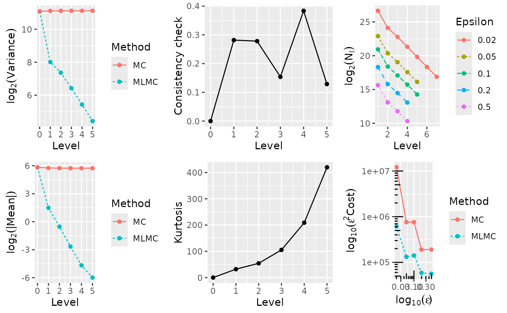
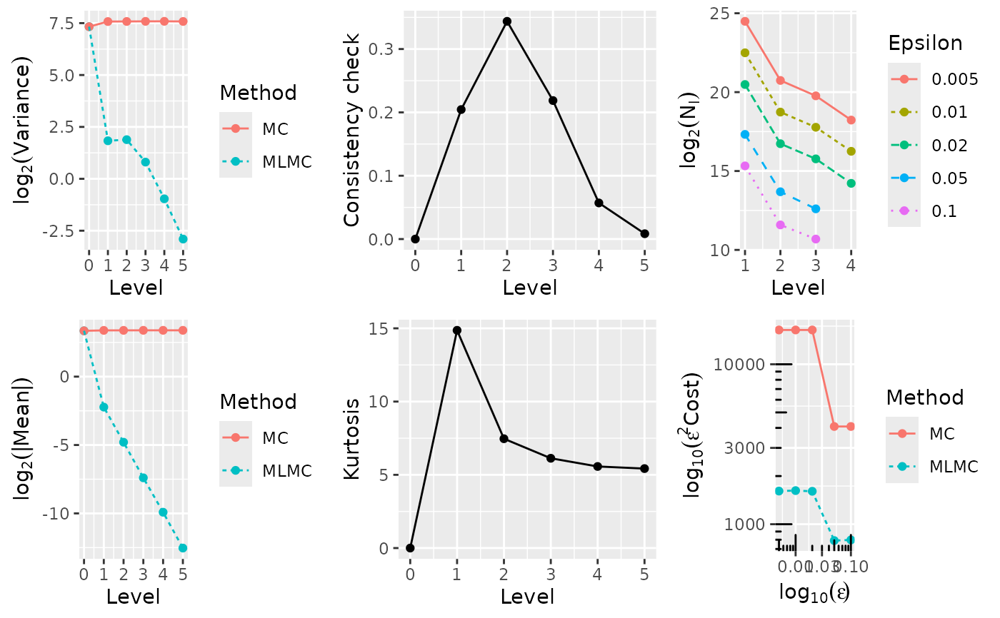

Financial options based on scalar geometric Brownian motion and Heston models, similar to Mike Giles' original 2008 Operations Research paper, Giles (2008), using an Euler-Maruyama discretisation
Value
A named list containing:
sumsis a vector of length six \(\left(\sum Y_i, \sum Y_i^2, \sum Y_i^3, \sum Y_i^4, \sum X_i, \sum X_i^2\right)\) where \(Y_i\) are iid simulations with expectation \(E[P_0]\) when \(l=0\) and expectation \(E[P_l-P_{l-1}]\) when \(l>0\), and \(X_i\) are iid simulations with expectation \(E[P_l]\). Note that only the first two components of this are used by the main
mlmc()driver, the full vector is used bymlmc.test()for convergence tests etc;costis a scalar with the total cost of the paths simulated, computed as \(N \times 4^l\) for level \(l\).
References
Giles, M.B. (2008) 'Multilevel Monte Carlo Path Simulation', Operations Research, 56(3), pp. 607–617. Available at: doi:10.1287/opre.1070.0496 .
Author
Louis Aslett <louis.aslett@durham.ac.uk>
Mike Giles <Mike.Giles@maths.ox.ac.uk>
Tigran Nagapetyan <nagapetyan@stats.ox.ac.uk>
Examples
# \donttest{
# These are similar to the MLMC tests for the original
# 2008 Operations Research paper, using an Euler-Maruyama
# discretisation with 4^l timesteps on level l.
#
# The differences are:
# -- the plots do not have the extrapolation results
# -- two plots are log_2 rather than log_4
# -- the new MLMC driver is a little different
# -- switch to X_0=100 instead of X_0=1
#
# Note the following takes quite a while to run, for a toy example see after
# this block.
N0 <- 1000 # initial samples on coarse levels
Lmin <- 2 # minimum refinement level
Lmax <- 6 # maximum refinement level
test.res <- list()
for(option in 1:5) {
if(option == 1) {
cat("\n ---- Computing European call ---- \n")
N <- 1000000 # samples for convergence tests
L <- 5 # levels for convergence tests
Eps <- c(0.005, 0.01, 0.02, 0.05, 0.1)
} else if(option == 2) {
cat("\n ---- Computing Asian call ---- \n")
N <- 1000000 # samples for convergence tests
L <- 5 # levels for convergence tests
Eps <- c(0.005, 0.01, 0.02, 0.05, 0.1)
} else if(option == 3) {
cat("\n ---- Computing lookback call ---- \n")
N <- 1000000 # samples for convergence tests
L <- 5 # levels for convergence tests
Eps <- c(0.01, 0.02, 0.05, 0.1, 0.2)
} else if(option == 4) {
cat("\n ---- Computing digital call ---- \n")
N <- 4000000 # samples for convergence tests
L <- 5 # levels for convergence tests
Eps <- c(0.02, 0.05, 0.1, 0.2, 0.5)
} else if(option == 5) {
cat("\n ---- Computing Heston model ---- \n")
N <- 2000000 # samples for convergence tests
L <- 5 # levels for convergence tests
Eps <- c(0.005, 0.01, 0.02, 0.05, 0.1)
}
test.res[[option]] <- mlmc.test(opre_l, N, L, N0, Eps, Lmin, Lmax, option = option)
# print exact analytic value, based on S0=K
T <- 1
r <- 0.05
sig <- 0.2
K <- 100
k <- 0.5*sig^2/r;
d1 <- (r+0.5*sig^2)*T / (sig*sqrt(T))
d2 <- (r-0.5*sig^2)*T / (sig*sqrt(T))
if(option == 1) {
val <- K*( pnorm(d1) - exp(-r*T)*pnorm(d2) )
} else if(option == 2) {
val <- NA
} else if(option == 3) {
val <- K*( pnorm(d1) - pnorm(-d1)*k - exp(-r*T)*(pnorm(d2) - pnorm(d2)*k) )
} else if(option == 4) {
val <- K*exp(-r*T)*pnorm(d2)
} else if(option == 5) {
val <- NA
}
if(is.na(val)) {
cat(sprintf("\n Exact value unknown, MLMC value: %f \n", test.res[[option]]$P[1]))
} else {
cat(sprintf("\n Exact value: %f, MLMC value: %f \n", val, test.res[[option]]$P[1]))
}
# plot results
plot(test.res[[option]])
}
#>
#> ---- Computing European call ----
#>
#> **********************************************************
#> *** Convergence tests, kurtosis, telescoping sum check ***
#> *** using N = 1e+06 samples ***
#> **********************************************************
#>
#> l ave(Pf-Pc) ave(Pf) var(Pf-Pc) var(Pf) kurtosis check cost
#> ---------------------------------------------------------------------------------------
#> 0 1.0227e+01 1.0227e+01 1.6179e+02 1.6179e+02 0.0000e+00 0.0000e+00 1.0000e+00
#> 1 2.1143e-01 1.0422e+01 4.4421e+00 2.0115e+02 1.9572e+01 1.9178e-01 4.0000e+00
#> 2 2.8264e-02 1.0418e+01 1.0584e+00 2.1190e+02 1.2168e+01 3.5155e-01 1.6000e+01
#> 3 5.5438e-03 1.0437e+01 2.7246e-01 2.1554e+02 7.6698e+00 1.4957e-01 6.4000e+01
#> 4 1.3545e-03 1.0449e+01 6.8922e-02 2.1670e+02 6.2774e+00 1.2004e-01 2.5600e+02
#> 5 4.7857e-04 1.0445e+01 1.7214e-02 2.1622e+02 5.9044e+00 5.8898e-02 1.0240e+03
#>
#> ******************************************************
#> *** Linear regression estimates of MLMC parameters ***
#> ******************************************************
#>
#> alpha = 2.195766 (exponent for MLMC weak convergence)
#> beta = 1.996385 (exponent for MLMC variance)
#> gamma = 2.000000 (exponent for MLMC cost)
#>
#> *****************************
#> *** MLMC complexity tests ***
#> *****************************
#>
#> eps value mlmc_cost std_cost savings N_l
#> -----------------------------------------------------------
#> 0.0050 1.0442e+01 4.611e+07 2.959e+09 64.17 19899245 1650887 405230 102458 25647
#> 0.0100 1.0437e+01 8.461e+06 1.839e+08 21.74 4263226 352669 86856 21828
#> 0.0200 1.0406e+01 2.136e+06 4.598e+07 21.52 1070765 89236 21609 5672
#> 0.0500 1.0452e+01 2.444e+05 1.808e+06 7.40 143013 13539 2954
#> 0.1000 1.0357e+01 6.223e+04 4.521e+05 7.26 34625 2902 1000
#>
#>
#> Exact value: 10.450584, MLMC value: 10.442380

#>
#> ---- Computing Asian call ----
#>
#> **********************************************************
#> *** Convergence tests, kurtosis, telescoping sum check ***
#> *** using N = 1e+06 samples ***
#> **********************************************************
#>
#> l ave(Pf-Pc) ave(Pf) var(Pf-Pc) var(Pf) kurtosis check cost
#> ---------------------------------------------------------------------------------------
#> 0 5.1098e+00 5.1098e+00 4.0375e+01 4.0375e+01 0.0000e+00 0.0000e+00 1.0000e+00
#> 1 6.0387e-01 5.7110e+00 1.5920e+01 5.7673e+01 4.8598e+00 5.0207e-02 4.0000e+00
#> 2 4.8965e-02 5.7585e+00 1.4247e+00 6.2175e+01 5.9438e+00 2.9734e-02 1.6000e+01
#> 3 5.7730e-03 5.7716e+00 1.5252e-01 6.3222e+01 6.2477e+00 1.5113e-01 6.4000e+01
#> 4 8.8095e-04 5.7566e+00 2.4884e-02 6.3421e+01 5.9796e+00 3.2950e-01 2.5600e+02
#> 5 2.5542e-04 5.7639e+00 5.3815e-03 6.3593e+01 5.7430e+00 1.4700e-01 1.0240e+03
#>
#> ******************************************************
#> *** Linear regression estimates of MLMC parameters ***
#> ******************************************************
#>
#> alpha = 2.821087 (exponent for MLMC weak convergence)
#> beta = 2.890042 (exponent for MLMC variance)
#> gamma = 2.000000 (exponent for MLMC cost)
#>
#> *****************************
#> *** MLMC complexity tests ***
#> *****************************
#>
#> eps value mlmc_cost std_cost savings N_l
#> -----------------------------------------------------------
#> 0.0050 5.7644e+00 2.723e+07 2.158e+08 7.92 7650220 2401661 359460 66013
#> 0.0100 5.7630e+00 6.823e+06 5.395e+07 7.91 1913961 602624 90029 16534
#> 0.0200 5.7530e+00 1.685e+06 1.349e+07 8.01 474328 148774 22168 4072
#> 0.0500 5.7635e+00 1.982e+05 5.306e+05 2.68 67676 20345 3069
#> 0.1000 5.6515e+00 5.317e+04 1.326e+05 2.49 16223 5237 1000
#>
#>
#> Exact value unknown, MLMC value: 5.764427

#>
#> ---- Computing lookback call ----
#>
#> **********************************************************
#> *** Convergence tests, kurtosis, telescoping sum check ***
#> *** using N = 1e+06 samples ***
#> **********************************************************
#>
#> l ave(Pf-Pc) ave(Pf) var(Pf-Pc) var(Pf) kurtosis check cost
#> ---------------------------------------------------------------------------------------
#> 0 2.0656e+01 2.0656e+01 1.7547e+02 1.7547e+02 0.0000e+00 0.0000e+00 1.0000e+00
#> 1 -2.5066e+00 1.8164e+01 1.3972e+01 1.9984e+02 4.5038e+00 1.5609e-01 4.0000e+00
#> 2 -6.8886e-01 1.7434e+01 4.8876e+00 2.0848e+02 4.0248e+00 4.4151e-01 1.6000e+01
#> 3 -1.7712e-01 1.7283e+01 1.4365e+00 2.1241e+02 3.7971e+00 2.8890e-01 6.4000e+01
#> 4 -4.5421e-02 1.7241e+01 3.8743e-01 2.1339e+02 3.7189e+00 4.3331e-02 2.5600e+02
#> 5 -1.2120e-02 1.7226e+01 1.0028e-01 2.1351e+02 3.6857e+00 3.3426e-02 1.0240e+03
#>
#> ******************************************************
#> *** Linear regression estimates of MLMC parameters ***
#> ******************************************************
#>
#> alpha = 1.930705 (exponent for MLMC weak convergence)
#> beta = 1.790173 (exponent for MLMC variance)
#> gamma = 2.000000 (exponent for MLMC cost)
#>
#> *****************************
#> *** MLMC complexity tests ***
#> *****************************
#>
#> eps value mlmc_cost std_cost savings N_l
#> -----------------------------------------------------------
#> 0.0100 1.7222e+01 6.550e+07 1.166e+10 178.03 12375863 1748394 515486 139935 36241 9244 2486
#> 0.0200 1.7232e+01 1.195e+07 7.288e+08 61.00 2640344 373649 109994 29888 7791 2095
#> 0.0500 1.7255e+01 1.301e+06 2.913e+07 22.40 349204 49250 14544 3928 1056
#> 0.1000 1.7249e+01 3.184e+05 7.284e+06 22.88 86853 12166 3586 945 254
#> 0.2000 1.7380e+01 5.459e+04 4.531e+05 8.30 16953 2418 1000 187
#>
#>
#> Exact value: 17.216802, MLMC value: 17.221988

#>
#> ---- Computing digital call ----
#>
#> **********************************************************
#> *** Convergence tests, kurtosis, telescoping sum check ***
#> *** using N = 4e+06 samples ***
#> **********************************************************
#>
#> l ave(Pf-Pc) ave(Pf) var(Pf-Pc) var(Pf) kurtosis check cost
#> ---------------------------------------------------------------------------------------
#> 0 5.6957e+01 5.6957e+01 2.1738e+03 2.1738e+03 0.0000e+00 0.0000e+00 1.0000e+00
#> 1 -2.8021e+00 5.4108e+01 2.5869e+02 2.2192e+03 3.1977e+01 2.8180e-01 4.0000e+00
#> 2 -6.9349e-01 5.3459e+01 1.6514e+02 2.2273e+03 5.4331e+01 2.7815e-01 1.6000e+01
#> 3 -1.5805e-01 5.3325e+01 8.5803e+01 2.2289e+03 1.0536e+02 1.5385e-01 6.4000e+01
#> 4 -3.9143e-02 5.3228e+01 4.3290e+01 2.2300e+03 2.0899e+02 3.8374e-01 2.5600e+02
#> 5 -1.5743e-02 5.3231e+01 2.1544e+01 2.2299e+03 4.1998e+02 1.2880e-01 1.0240e+03
#>
#> WARNING: kurtosis on finest level = 419.982006
#> indicates MLMC correction dominated by a few rare paths;
#> for information on the connection to variance of sample variances,
#> see http://mathworld.wolfram.com/SampleVarianceDistribution.html
#>
#>
#> ******************************************************
#> *** Linear regression estimates of MLMC parameters ***
#> ******************************************************
#>
#> alpha = 1.909840 (exponent for MLMC weak convergence)
#> beta = 0.910335 (exponent for MLMC variance)
#> gamma = 2.000000 (exponent for MLMC cost)
#>
#> *****************************
#> *** MLMC complexity tests ***
#> *****************************
#>
#> eps value mlmc_cost std_cost savings N_l
#> -----------------------------------------------------------
#> 0.0200 5.3208e+01 1.537e+09 3.045e+10 19.81 105527740 18202824 7259098 2636795 934166 331404 120868
#> 0.0500 5.3207e+01 5.272e+07 3.045e+08 5.78 7818477 1348669 541519 195316 71650
#> 0.1000 5.3214e+01 1.416e+07 7.612e+07 5.38 2025597 347060 138792 54151 19750
#> 0.2000 5.3143e+01 1.473e+06 4.755e+06 3.23 326888 56820 22915 8632
#> 0.5000 5.3360e+01 2.248e+05 7.608e+05 3.38 51029 8776 3524 1285
#>
#>
#> Exact value: 53.232482, MLMC value: 53.207787

#>
#> ---- Computing Heston model ----
#>
#> **********************************************************
#> *** Convergence tests, kurtosis, telescoping sum check ***
#> *** using N = 2e+06 samples ***
#> **********************************************************
#>
#> l ave(Pf-Pc) ave(Pf) var(Pf-Pc) var(Pf) kurtosis check cost
#> ---------------------------------------------------------------------------------------
#> 0 1.0198e+01 1.0198e+01 1.6083e+02 1.6083e+02 0.0000e+00 0.0000e+00 1.0000e+00
#> 1 2.1332e-01 1.0423e+01 3.5615e+00 1.9088e+02 1.4864e+01 2.0447e-01 4.0000e+00
#> 2 3.5967e-02 1.0438e+01 3.6965e+00 1.9141e+02 7.4637e+00 3.4377e-01 1.6000e+01
#> 3 5.9212e-03 1.0457e+01 1.7472e+00 1.9206e+02 6.1297e+00 2.1868e-01 6.4000e+01
#> 4 1.0350e-03 1.0455e+01 5.1262e-01 1.9230e+02 5.5699e+00 5.7055e-02 2.5600e+02
#> 5 1.6847e-04 1.0455e+01 1.3369e-01 1.9141e+02 5.4257e+00 8.4357e-03 1.0240e+03
#>
#> ******************************************************
#> *** Linear regression estimates of MLMC parameters ***
#> ******************************************************
#>
#> alpha = 2.573162 (exponent for MLMC weak convergence)
#> beta = 1.232123 (exponent for MLMC variance)
#> gamma = 2.000000 (exponent for MLMC cost)
#>
#> *****************************
#> *** MLMC complexity tests ***
#> *****************************
#>
#> eps value mlmc_cost std_cost savings N_l
#> -----------------------------------------------------------
#> 0.0050 1.0460e+01 6.447e+07 6.555e+08 10.17 23538371 1752589 890480 307355
#> 0.0100 1.0459e+01 1.623e+07 1.639e+08 10.10 5905797 436643 224056 77938
#> 0.0200 1.0436e+01 4.016e+06 4.097e+07 10.20 1466309 108730 55881 19067
#> 0.0500 1.0491e+01 3.161e+05 1.633e+06 5.17 163844 13169 6222
#> 0.1000 1.0649e+01 7.974e+04 4.083e+05 5.12 41071 3072 1649
#>
#>
#> Exact value unknown, MLMC value: 10.459730

# }
# The level sampler can be called directly to retrieve the relevant level sums:
opre_l(l = 7, N = 10, option = 1)
#> $sums
#> [1] 1.740459e-01 2.187551e-02 2.870045e-03 3.955765e-04 7.264860e+01
#> [6] 4.037180e+03
#>
#> $cost
#> [1] 163840
#>